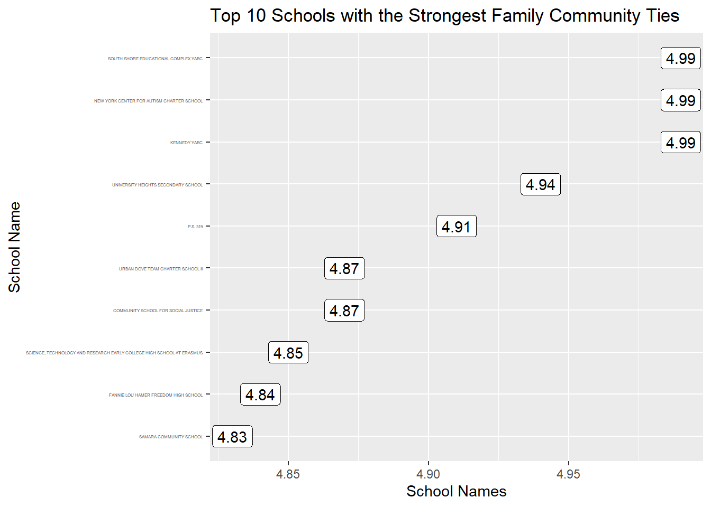

Chapter 6 Results
6.1 Distribution of School Scores
Before we make any comparison between NYC schools, we firstly have a look at the distribution of our dataset, i.e. the distribution of school scores from students’, teachers’ and parents’ perspective. In order to do that, we make density plots of the scores faceted by these five components.(we drop supportive environment score because we know from chapter 4 that it has nearly 100% missing values)
 We know from the plot that the distribution of school scores in these five aspects are not normally distributed, in fact, they are left-skewed, with long-tail data distributing in the left side of the plot.
We know from the plot that the distribution of school scores in these five aspects are not normally distributed, in fact, they are left-skewed, with long-tail data distributing in the left side of the plot.
6.2 Top 10 performance schools


## # A tibble: 1,831 x 11
## DBN name parent_rr teacher_rr student_rr collab_teachers effective_schle~
## <chr> <chr> <dbl> <dbl> <chr> <dbl> <dbl>
## 1 <NA> <NA> NA NA <NA> NA NA
## 2 <NA> <NA> NA NA <NA> NA NA
## 3 01M015 P.S.~ 91 100 N/A 4.1 4.19
## 4 01M019 P.S.~ 100 93 N/A 4.53 4.51
## 5 01M020 P.S.~ 58 90 N/A 2.71 2.98
## 6 01M034 P.S.~ 29 100 95 2.69 2.59
## 7 01M063 THE ~ 80 100 N/A NA NA
## 8 01M064 P.S.~ 52 96 N/A 4.56 4.09
## 9 01M110 P.S.~ 79 77 N/A 3.11 3.15
## 10 01M134 P.S.~ 46 93 N/A 2.51 1.53
## # ... with 1,821 more rows, and 4 more variables: rig_instruction <chr>,
## # supp_env <chr>, family_communityties <chr>, trust <dbl>
## # A tibble: 1,831 x 11
## DBN name parent_rr teacher_rr student_rr collab_teachers effective_schle~
## <chr> <chr> <dbl> <dbl> <chr> <dbl> <dbl>
## 1 10X504 KENN~ 28 63 59 4.56 4.84
## 2 18K922 SOUT~ 58 71 2 4.71 4.99
## 3 84M337 NEW ~ 94 100 N/A 4.72 4.96
## 4 07X495 UNIV~ 83 92 97 3.94 4.75
## 5 14K319 P.S.~ 98 100 N/A 4.95 4.52
## 6 07X427 COMM~ 58 96 90 4.93 4.87
## 7 84X610 URBA~ 79 88 62 3.87 3.89
## 8 17K543 SCIE~ 87 82 93 4.69 4.49
## 9 12X682 FANN~ 57 95 78 3.95 4.3
## 10 12X458 SAMA~ 100 86 N/A 4.79 4.63
## # ... with 1,821 more rows, and 4 more variables: rig_instruction <dbl>,
## # supp_env <chr>, family_communityties <dbl>, trust <dbl>